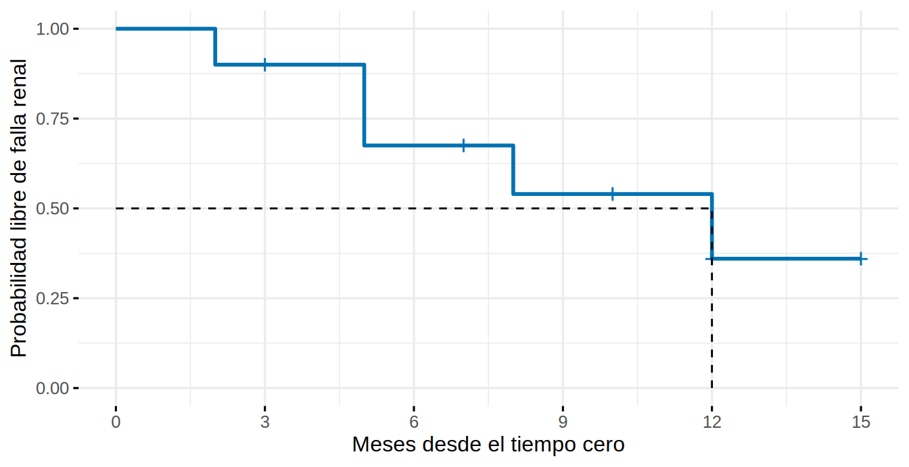

library(tidyverse)
library(survival)
library(survminer)
library(broom)
source("R/simular_cohorte_pronostico.R")
theme_set(theme_minimal(base_size = 12))
coh <- read_csv("Bases/cohorte_pronostico.csv") |>
mutate(sexo = factor(sexo, levels = c("Mujer", "Hombre")),
dm = factor(dm, levels = 0:1, labels = c("Sin DM", "Con DM")),
krt = as.integer(estado == 1))Kaplan-Meier y log-rank
Nota🩺 Escenario
Un paciente con ERC G4 te pregunta: “Doctor, ¿cuál es la probabilidad de que dentro de tres años aún no necesite diálisis?”. Y una residente quiere saber si los pacientes con diabetes llegan a diálisis antes que los demás. Las dos preguntas se responden con la misma herramienta: la curva de Kaplan-Meier, que usa a cada paciente durante el tiempo que se le observó, incluidos los censurados.
Lo que vamos a hacer
- Construir la curva de Kaplan-Meier a mano con 10 pacientes y comprobar que
survfit()hace lo mismo. - Estimarla en la cohorte de 3 000 pacientes, graficarla y compararla con la verdad.
- Comparar grupos con el log-rank y expresar la diferencia en números que un paciente entienda.
Paso 1: la idea, con 10 pacientes y una calculadora
Retomamos los 10 pacientes hipotéticos de 9.1. La idea de Kaplan-Meier cabe en una frase: cada vez que ocurre un evento, la probabilidad de seguir libre de él se multiplica por la fracción de pacientes en riesgo que sobrevivió ese momento.
\[ \hat S(t) = \prod_{t_i \le t}\left(1 - \frac{d_i}{n_i}\right) \]
con \(d_i\) = eventos en el instante \(t_i\) y \(n_i\) = pacientes todavía en riesgo (vivos, sin evento y aún observados) justo antes de \(t_i\). Los censurados no hacen bajar la curva: simplemente salen del denominador cuando dejamos de verlos.
Construimos la tabla paso a paso: para cada instante, cuántos estaban en riesgo, cuántos tuvieron el evento y cuántos salieron censurados.
km_mano <- mini |>
group_by(tiempo) |>
summarise(eventos = sum(evento), censurados = sum(1 - evento), .groups = "drop") |>
mutate(en_riesgo = nrow(mini) - lag(cumsum(eventos + censurados), default = 0), # quedan al inicio del instante
prob_seguir_libre = 1 - eventos / en_riesgo, # 1 - d/n
S = cumprod(prob_seguir_libre)) # producto acumulado
km_mano# A tibble: 8 × 6
tiempo eventos censurados en_riesgo prob_seguir_libre S
<dbl> <dbl> <dbl> <dbl> <dbl> <dbl>
1 2 1 0 10 0.9 0.9
2 3 0 1 9 1 0.9
3 5 2 0 8 0.75 0.675
4 7 0 1 6 1 0.675
5 8 1 0 5 0.8 0.54
6 10 0 1 4 1 0.54
7 12 1 1 3 0.667 0.36
8 15 0 1 1 1 0.36 Cómo leerla. En el mes 2 estaban en riesgo 10 pacientes y 1 tuvo el evento: \(S = 1 - 1/10 = 0.90\). En el mes 3 sale un censurado (B): la curva no baja, pero el denominador pasa de 9 a 8. En el mes 5 hay 2 eventos entre 8 en riesgo: \(S = 0.90 \times (1 - 2/8) = 0.675\). Y así sucesivamente. Comprobemos que R obtiene lo mismo:
# A tibble: 8 × 3
tiempo S_survfit S_a_mano
<dbl> <dbl> <dbl>
1 2 0.9 0.9
2 3 0.9 0.9
3 5 0.675 0.675
4 7 0.675 0.675
5 8 0.54 0.54
6 10 0.54 0.54
7 12 0.36 0.36
8 15 0.36 0.36 Las dos columnas coinciden: survfit() no tiene magia, hace esta multiplicación. Y la mediana de supervivencia es el primer momento en que la curva cae a 0.50 o menos (aquí, el mes 12). Dibujada, la curva es una escalera:
ggsurvplot(km_mini, data = mini, conf.int = FALSE, censor.shape = "+", censor.size = 5,
surv.median.line = "hv", break.time.by = 3, palette = "#0072B2", legend = "none",
xlab = "Meses desde el tiempo cero", ylab = "Probabilidad libre de falla renal",
ggtheme = theme_minimal(base_size = 12))
Paso 2: la curva de la cohorte completa
Con 3 000 pacientes el procedimiento es idéntico; solo cambia el tamaño de la escalera.
Call: survfit(formula = Surv(tiempo_meses, krt) ~ 1, data = coh)
n events median 0.95LCL 0.95UCL
[1,] 3000 839 NA NA NALa mediana de supervivencia libre de falla renal es NA: la curva nunca llegó a 0.50 (menos de la mitad tuvo falla renal en el seguimiento). Por eso, en vez de la mediana, se reporta la supervivencia a tiempos fijos con su IC:
resumen_km <- summary(km, times = c(12, 24, 36, 60))
tab_km <- tibble(meses = resumen_km$time, en_riesgo = resumen_km$n.risk,
supervivencia = resumen_km$surv, ic_inf = resumen_km$lower, ic_sup = resumen_km$upper,
riesgo_acumulado = 1 - resumen_km$surv)
tab_km |> mutate(across(c(supervivencia, ic_inf, ic_sup, riesgo_acumulado), \(x) round(x, 3)))# A tibble: 4 × 6
meses en_riesgo supervivencia ic_inf ic_sup riesgo_acumulado
<dbl> <dbl> <dbl> <dbl> <dbl> <dbl>
1 12 2383 0.847 0.834 0.861 0.153
2 24 1961 0.762 0.747 0.778 0.238
3 36 1169 0.711 0.693 0.729 0.289
4 60 37 0.617 0.577 0.661 0.383Qué vemos. A los 36 meses, la probabilidad de seguir sin falla renal es 71 % (IC 95 %: 69 a 73 %), es decir, un riesgo acumulado de 29 %. Es la respuesta a la pregunta de tu paciente. Y a los 60 meses quedan solo 37 pacientes en riesgo: la cola derecha es poco fiable y el IC se ensancha.
Dibujar la curva
ggsurvplot(km, data = coh, conf.int = TRUE, risk.table = TRUE, risk.table.height = 0.25,
break.time.by = 12, xlab = "Meses desde el inicio del seguimiento",
ylab = "Probabilidad libre de falla renal", legend = "none",
palette = "#0072B2", ggtheme = theme_minimal(base_size = 11))
La tabla de pacientes en riesgo debajo de la curva no es decorativa: te dice cuánto confiar en cada tramo. Cuando quedan pocos pacientes, la curva “salta” con cada evento; no interpretes colas con menos de 10-20 pacientes en riesgo.
Tip💡 Otras formas de ver la misma curva (
fun=, ncensor.plot)
ggsurvplot(km, fun = "event") dibuja el riesgo acumulado \(1 - S(t)\) (sube desde 0; útil cuando el evento es raro y la supervivencia queda pegada al 100 %). fun = "cumhaz" dibuja el riesgo instantáneo acumulado \(H(t) = -\ln S(t)\). Con ncensor.plot = TRUE aparece debajo un gráfico con cuántos censurados hay en cada momento, y con surv.median.line = "hv" una línea que marca la mediana (cuando existe).
Por dentro de survfit: la curva como tabla
El objeto survfit es una lista con todo lo que hace falta para armar tus propias figuras o tablas. broom::tidy() lo convierte en una tabla ordenada:
# A tibble: 6 × 7
time n.risk n.event n.censor estimate conf.low conf.high
<dbl> <dbl> <dbl> <dbl> <dbl> <dbl> <dbl>
1 1 3000 47 20 0.984 0.980 0.989
2 2 2933 41 21 0.971 0.965 0.977
3 3 2871 47 23 0.955 0.947 0.962
4 4 2801 39 11 0.941 0.933 0.950
5 5 2751 50 17 0.924 0.915 0.934
6 6 2684 27 11 0.915 0.905 0.925Cada fila es un instante con algún evento o censura: cuántos estaban en riesgo (n.risk), cuántos tuvieron el evento (n.event), cuántos se censuraron (n.censor) y la estimación estimate = \(S(t)\). Es exactamente la tabla que armamos a mano.
Paso 3: ¿funciona? Comparamos con la verdad
La cohorte tiene censura (los pacientes entran escalonadamente y algunos se pierden). Como la simulamos, podemos generar la misma población sin censura alguna, con 60 000 pacientes, y ver qué fracción tuvo falla renal. Comparamos tres cosas a distintos tiempos: la proporción cruda de la cohorte observada (eventos / total), el 1 − KM y la verdad.
meses <- c(12, 36, 60)
# Verdad: cohorte grande SIN censura; la muerte se trata igual que aquí (se deja de observar al paciente)
v <- simular_cohorte_pronostico(60000, semilla = 99, censura = FALSE)
km_v <- survfit(Surv(tiempo_meses, estado == 1) ~ 1, data = v)
verdad_1mkm <- 1 - summary(km_v, times = meses)$surv
cruda <- sapply(meses, \(m) mean(coh$krt == 1 & coh$tiempo_meses <= m)) # proporción: eventos / todos
uno_menos_km <- 1 - summary(km, times = meses)$surv
tibble(meses = meses,
`Proporción cruda (eventos / n)` = cruda,
`1 - Kaplan-Meier` = uno_menos_km,
`Verdad (sin censura)` = verdad_1mkm) |>
mutate(across(-meses, \(x) round(100 * x, 1)))# A tibble: 3 × 4
meses Proporción cruda (eventos / …¹ `1 - Kaplan-Meier` `Verdad (sin censura)`
<dbl> <dbl> <dbl> <dbl>
1 12 14.8 15.3 15.2
2 36 25.8 28.9 28.5
3 60 28 38.3 36.5
# ℹ abbreviated name: ¹`Proporción cruda (eventos / n)`Qué vemos. La proporción cruda subestima el riesgo y la brecha crece con el tiempo: 0.4 puntos a los 12 meses, 8.5 a los 60, porque incluye a pacientes que ya no se observaban. El 1 − KM queda muy cerca de la verdad aun con la censura (a los 60 meses se aleja algo más, porque solo quedan unos 37 pacientes en riesgo). Es la gracia del método: corrige la censura siempre que sea no informativa (aquí lo es por construcción). Ojo: esta “verdad” responde “¿qué riesgo habría si las muertes no impidieran la falla renal?”; en 9.5 veremos que esa no es la pregunta clínica real y qué hacer.
Paso 4: comparar grupos con el log-rank
La residente pregunta: ¿los pacientes con diabetes llegan antes a la falla renal? Dibujamos una curva por grupo, ahora como riesgo acumulado para ver mejor la separación:
km_dm <- survfit(Surv(tiempo_meses, krt) ~ dm, data = coh)
ggsurvplot(km_dm, data = coh, conf.int = TRUE, risk.table = TRUE, pval = TRUE, pval.method = TRUE,
fun = "event", break.time.by = 12, xlab = "Meses", ylab = "Riesgo acumulado de falla renal",
legend.title = "", legend.labs = c("Sin DM", "Con DM"),
palette = c("#999999", "#D55E00"), ggtheme = theme_minimal(base_size = 11))
La prueba log-rank compara las curvas completas. En cada instante con un evento, compara los eventos observados en cada grupo con los que se esperarían si no hubiera diferencia:
Call:
survdiff(formula = Surv(tiempo_meses, krt) ~ dm, data = coh)
N Observed Expected (O-E)^2/E (O-E)^2/V
dm=Sin DM 1746 380 531 42.9 119
dm=Con DM 1254 459 308 74.0 119
Chisq= 119 on 1 degrees of freedom, p= <2e-16 Entre los pacientes con diabetes se observaron 459 fallas renales y se esperaban 308 si no hubiera diferencia; entre los que no tienen diabetes, 380 observadas frente a 531 esperadas. El valor p es diminuto. Pero el log-rank solo dice que las curvas difieren, no cuánto. Para cuantificar, se reportan las diferencias de riesgo a tiempos fijos (aquí) o el HR de Cox (9.3):
# A tibble: 8 × 5
grupo meses riesgo_acumulado ic_inf ic_sup
<chr> <dbl> <dbl> <dbl> <dbl>
1 dm=Sin DM 12 0.09 0.076 0.103
2 dm=Sin DM 24 0.159 0.142 0.177
3 dm=Sin DM 36 0.218 0.197 0.239
4 dm=Sin DM 60 0.299 0.265 0.331
5 dm=Con DM 12 0.242 0.217 0.266
6 dm=Con DM 24 0.351 0.322 0.378
7 dm=Con DM 36 0.391 0.361 0.42
8 dm=Con DM 60 0.497 0.411 0.57 A los 24 meses el riesgo acumulado es 35 % con diabetes frente a 16 % sin ella. Observa también que la distancia entre las curvas se abre en los primeros 18-24 meses y luego se mantiene casi paralela: lo retomaremos en 9.4.
Más de dos grupos y log-rank estratificado
Call:
survdiff(formula = Surv(tiempo_meses, krt) ~ cat_a, data = coh)
N Observed Expected (O-E)^2/E (O-E)^2/V
cat_a=A1 103 5 33.7 24.4 25.7
cat_a=A2 1267 197 389.5 95.2 180.0
cat_a=A3 1630 637 415.8 117.7 236.6
Chisq= 241 on 2 degrees of freedom, p= <2e-16 Call:
survdiff(formula = Surv(tiempo_meses, krt) ~ cat_a + strata(dm),
data = coh)
N Observed Expected (O-E)^2/E (O-E)^2/V
cat_a=A1 103 5 29.7 20.5 21.6
cat_a=A2 1267 197 363.6 76.4 141.0
cat_a=A3 1630 637 445.7 82.1 185.2
Chisq= 190 on 2 degrees of freedom, p= <2e-16 Con tres categorías, el log-rank da una sola prueba para “¿alguna difiere?”. El estratificado compara los grupos dentro de cada estrato de otra variable y luego combina: es una forma simple de ajustar por una variable categórica. Para ajustar por varias, se usa Cox (9.3).
Trampas frecuentes
Advertencia⚠️ Lo que el log-rank no te dice
- Un valor p no es un tamaño de efecto. Complementa siempre con riesgos a tiempos fijos o con el HR.
- El log-rank da igual peso a todos los instantes y tiene más potencia cuando el cociente de riesgos es constante. Si el efecto es temprano,
survdiff(..., rho = 1)(Peto-Peto) pesa más el inicio. Decide la variante antes de ver los datos. - No hay mediana si la curva no cruza 0.50 (como aquí). No la inventes: reporta supervivencia o riesgo a tiempos fijos.
Importante🎯 En resumen
- Kaplan-Meier multiplica, en cada evento, la fracción de pacientes en riesgo que lo sobrevivió; los censurados salen del denominador sin bajar la curva.
- Reporta supervivencia o riesgo acumulado a tiempos fijos con IC, la mediana solo si existe, y la tabla de pacientes en riesgo.
- La proporción cruda subestima el riesgo; el 1 − KM recupera la verdad cuando la censura es no informativa.
- El log-rank compara curvas completas: da un p, no un tamaño de efecto.
- Un log-rank estratificado ajusta por una variable; para varias, usa Cox.
Ejercicio
- Grafica el KM por sexo y por categoría de albuminuria (A1-A3). ¿Qué grupo tiene mayor riesgo?
- Calcula el riesgo acumulado a 36 meses en pacientes con TFGe < 20 vs. ≥ 20, con IC.
- Haz el KM de muerte (
estado == 2) tratando la falla renal como censura. ¿Qué problema aparece al interpretarlo? (Pista: lo veremos en 9.5.)